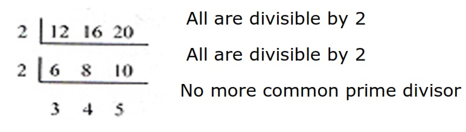
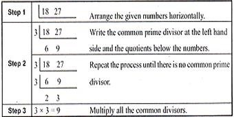

ENGAGE
Justin has 3 boxes of toy cars. The first box contains 12 toy cars. The second box has 16 toy cars. And the third box has 20 toy cars. He divided each box of toys equally among his younger cousins. What is the biggest possible number of toy cars that each of his cousins will receive. How many of his cousins will receive this number of toys?
EXPLORE
To answer the problem, find the greatest common factor (GCF) of 12 ,16, and 20 we can find this by using continuous Division Method or also known as Ladder Method.
Continuous Division
Step 1: Write the given numbers 12, 16, and 20, in a horizontal line and determine a common prime factor that will divide all numbers.
Step 2: Write each common prime to the left side of 12, 16, and 20 and write the quotient below the numbers. Repeat the process until there is no common prime factor (divisor).
Step 3: Multiply all common prime factors (divisors). In our Example we, have 2 x 2 = 4. The GCF is 4.
Therefore, each cousin will receive at most 4 toys.
To know how many of them will receive this number of toys, we find the total number of toy cars and then divide the sum by the GCF.
12 + 16 + 20 = 48 toy cars.
48 ÷ 4 = 12
Thus, of Justine’s cousins will receive 4 toy cars each.
EXPLAIN
Common factors are factors that are the same for two or more numbers. Common factor is the greatest number contained exactly in 2 or more numbers. Factors is also divisor, so it follows that the greatest common factor is also the greatest common divisor of the given numbers. Some numbers, like 25 and 18, have no common factors other than 1. The numbers are said to be relatively prime.
Once way of solving for the GCF of a set of the given numbers is through Continuous Division Method. As its name implies, it is done with repeated division until all given numbers are not anymore divisible one common divisor other than 1. The following steps are considered in this method.
Step 1: Write the given numbers horizontally and determine a common prime factor that will divide all the numbers.
Step 2: Write each common prime factor at the left side of the horizontal line and write the quotients below the numbers. Repeat the process until there is no common divisor.
Step 3:Multiply all the prime divisors, which is the GCF.
Example What is the GCF of 18 and 27
Answer: The GCF of 18 and 27 is 9.
Application and Problem Solving
Mr. Perez bough paper plates, table napkins, and cups as his contribution every Christmas party he will go to. Plates come packages of 60, table napkins in 80 and cups in 120. He wants to bring the same number of plates, table napkins, and cups. What is the largest possible number of each that he can bring?